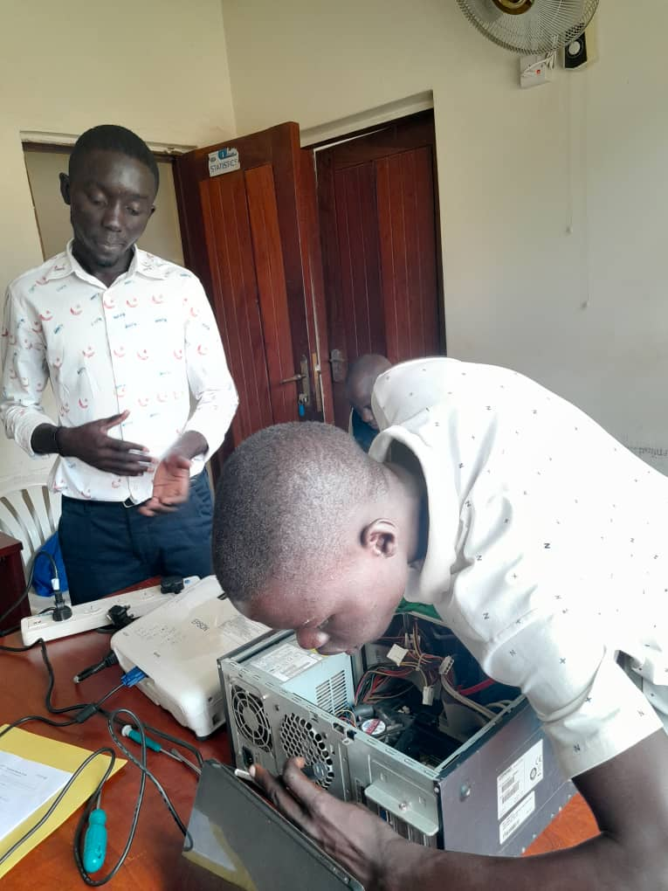

He was born in a small town where electricity often flickered and the internet was a rare luxury, but from the first day he touched an old dusty computer gifted by his uncle, he was captivated, spending long nights pressing random keys, watching lines of code he didn’t understand dance on the screen, determined to unlock every secret , ; in school, while others chased sports, he sat in the Library reading about viruses, worms, and digital footprints, and when a teacher noticed his obsession, she introduced him to free coding platforms where he began experimenting with basic scripts, breaking them and fixing them until he understood the logic behind each command; curiosity grew into skill when he joined local cyber cafés, secretly studying network traffic and marveling at how data traveled invisibly between machines; his parents, though worried, supported his hunger for knowledge by saving for a secondhand laptop that became his laboratory, and by the time he reached high school, he was building firewalls, cracking simple encryption challenges, and mentoring classmates on password security; he faced criticism and suspicion—some thought he was just a hacker—but he clarified his dream was to protect, not to destroy, and he proved it when he stopped a phishing scam targeting his school, earning respect from teachers and peers; he entered university on a scholarship, spending more time in computer labs than lecture halls, winning hackathons where he exposed vulnerabilities responsibly and earned internships with cybersecurity firms; through sleepless nights, countless failures, and endless reading of white papers, he built not just technical knowledge but ethical conviction that cybersecurity was a calling to defend the powerless from invisible digital enemies; soon, companies began seeking him, governments requested his advice, and young learners looked up to him as a mentor; his life became a mission, teaching others through blogs, workshops, and mentorship programs, proving that genius isn’t born but forged through persistence, curiosity, mistakes, resilience, and an unshakable belief in doing what is right; from a child in a small town with a broken computer to a global cybersecurity genius, his journey was not a straight path but a relentless pursuit of knowledge, integrity, and impact that continues to inspire generations to dream, to learn, and to defend.

| Names | Telephone | Address | Reference |
|---|
Please click me Library
| Name | Telephone | |
|---|---|---|
| Meg | meg@100.gmail.com | 0786935783 |